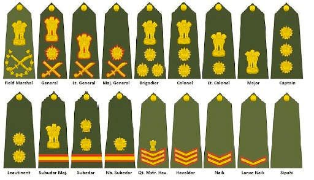

"Defence System"
The system of a nation which provides a security from invasion of another country and maintains the peace inside its own
teritory is called Defence System. India has three wings of Defence System: Indian Army,Indian Air Force and Indian Navy.
These services are very prestigious and stand in high esteem. They have maintained their pride and honour through defencig
the nation whenever it found necessary.
The youth of India are getting attracted by its service and charming posts available in Army,Airforce and Navy. To get
commisioned in defence system a candidate needs to crack written examination conducted by UPSC(Union Publuc Service Commmision)
and an interview round of SSB(Services Selection Board). The Ministry of Defence,India has set up an organisation to release
the recruitment and shortlist the deserving candiadtes.
The minimum education qualification is 12th in case of NDA and Graduation for other academies. It's mandatory that the
student should belong from the sciennce background but for some enteries of Army aspirants from any stream can apply. Such
candidates go through an entrance exam conducted by UPSC and interview by SSB.
SSB is an interview excercise which is mainly a psychological assessment of the personality of the candidate, to check his/her
potential as a future officer inn Indian Defence System. Its main aim is to select a candidate withm OLQs(Officer Like
Qualities).
- Once clearing the SSB, candidates who have passed 12th class are allowed to persue B.Sc in NDA and B.Tech
for Naval Academy.
- For engineering background there are some other post also and aspirants are not required to attempt UPSC
entrance exam but they have to clear SSB interview.
- One who applies for the post of Air Force, he/she has to go through The Air force aptitude test.
Career as an officer
As an officer one gets personal satisfaction for serving his own motherland.
It provides him best training and education facilities.
It provides an opportunity to become a leader in a true sense.
It provides purposeful and disciplined lifestyle.
It ensures economic security with better service career,promotions and pay scale.
Officer's Rank
Permanent Commisioned Rank in Army
| Commisioned Officers |
Insignia |
| Field Marshal |
National emblem over a crossed sword and baton in a lotus blossom wreath. |
| General |
Crossed sword and baton with star and national emblem. |
| Lieutenant general |
Crossed sword and baton with national emblem above. |
| Major general |
Crossed sword and baton with the star above |
| Brigadier |
Three stars in a triangle and National Emblem above |
| Colonel |
Two stars and the national emblem above |
| Lieutenant Colonel |
One Star and National Emblem above |
| Major |
National Emblem |
| Captain |
Three stars in one line |
| Lieutenant |
Two stars in one line |

Permanent Commisioned Rank in Air Force
| Commisioned Officers |
Insignia |
| Marshal of the Air Force |
Five-star rank with five stripes whose first stripe is more thicker than others. |
| Air Chief Marshal |
Four-star rank with four stripes whose first stripe is more thicker than others. |
| Air Marshal |
Three-star rank with three stripes whose first stripe is more thicker than others. |
| Air Vice Marshal |
Two-star rank with two stripes whose first stripe is more thicker than others. |
| Air Commodore |
One-star rank with one blue and black thick stripe. |
| Group Captain |
Four stripes of equal width. |
| Wing Commander |
Three stripes of equal widht. |
| Squadron Leader |
Three stripes and width of middle one is low. |
| Flight Lieutenant |
Two stripes. |
| Flying Office |
One Stripe. |

Permanent Commisioned Rank in Navy
| Commisioned Officers |
Insignia |
| Admiral of the Fleet |
Five-star rank with a wide golden stripe and four stripes of equal widht with one round shape on top. |
| Admiral |
Four-star rank with with a wide golden stripe three stripes of equal widht with one round shape on top. |
| Vice Admiral |
Three-star rank with a wide golden stripe and two golden stripes with one round shape on top. |
| Rear Admiral |
Two-star rank with a wide golden stripe and one golden Stripe with round shape. |
| Commodore |
A wide golden stripe with round shape on top. |
| Captain |
Four stripes of equal widht with one round shape on top. |
| Commander |
Three stripes of equal widht with one round shape on top. |
| Lieutenant Commander |
One thin stripe between two golden stripes with one round shape on top. |
| Lieutenant |
Two golden stripes with one round shape on top. |
| Sub-Lieutenant |
One golden Stripe with round shape. |

Pays and Perks
| Pay Level |
Pay in (₹) |
| Level 10 |
56,100-1,77,500 |
| Level 10B |
61,300-1,93,900
|
| Level 11 |
69,400-2,07,200
|
| Level 12A |
1,21,200-2,12,400 |
| Level 13 |
1,30,600-2,15,900 |
| Level 13A |
1,39,600-2,17,600 |
| Level 14 |
1,44,200-2,18,200 |
| Level 15 |
1,82,200- 2,24,100 |
| Level 16 |
2,05,400-2,24,400
|
| Level 17 |
2,25,000/- (fixed)
|
| Level 18 |
2,50,000/-(fixed) |